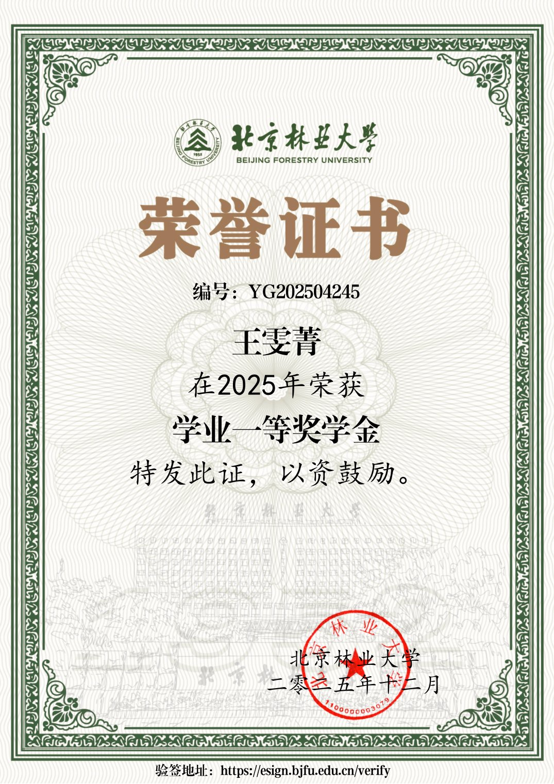
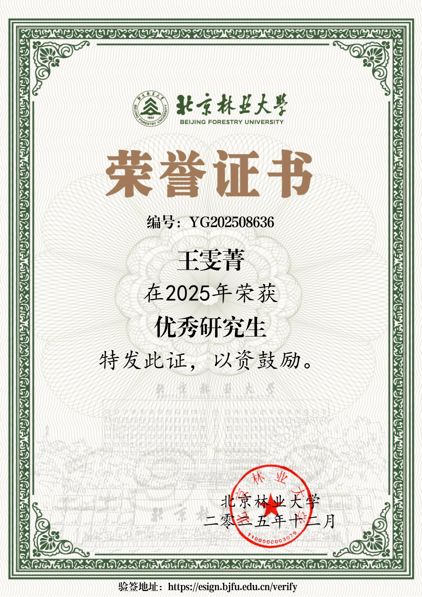

04 · CAMPUS CAMP · 学业和荣誉
学业和荣誉
北京林业大学软件工程硕士（2024.09 – 2027.06）。读研以来每年都拿到研究生学业一等奖学金，2025 年获评优秀研究生、优秀研究生干部；本科到研究生一直担任团支书。
2025 年获奖证书 CERTIFICATES


证书由北京林业大学颁发，可在 esign.bjfu.edu.cn/verify 验签。
04 · CAMPUS CAMP · 学业和荣誉
北京林业大学软件工程硕士（2024.09 – 2027.06）。读研以来每年都拿到研究生学业一等奖学金，2025 年获评优秀研究生、优秀研究生干部；本科到研究生一直担任团支书。


证书由北京林业大学颁发，可在 esign.bjfu.edu.cn/verify 验签。